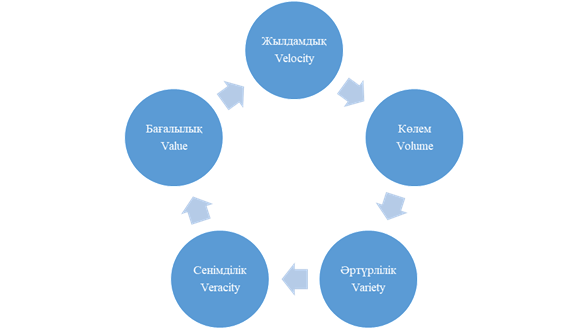

3. Үлкен көлемді деректерді басқару. Үлкен
көлемді деректерді басқару бағыттары, қағидаттары,
кезеңдері
1. Үлкен көлемді деректерді басқару.
2. Big Data басқару бағыттары, қағидаттары,
кезеңдері.
3.1 Үлкен көлемді деректерді басқару
Үлкен деректерді
пайдалану ақпаратты сақтау мен өңдеуге байланысты мәселелерді
шешуді талап етті. Сондықтан, 2001 жылы Meta Group құрамының
зерттеушісі Даг Лейни бұған аса назар аударды. Нәтижесінде
деректерді басқару мәселелерін шешуге назар аудару керек болатын үш
бағыт анықталды: Volume, Velocity және Variety. Кейінірек
олар 3V (VVV) деп аталатын үлкен деректердің сипаттамалық
моделінің негізін қалады [10].
1. Volume-көлемі.
Big Data - ақпаратты
алудың, сақтаудың және өңдеудің әдістемелері
мен технологияларының тұтас жиынтығы, өйткені ақпарат
үнемі өзгеріп отырады: қолда бар ақпарат жаңартылады,
яғни оған жаңасы қосылады. Үлкен ақпарат
массивімен жұмыс істеу кезінде кіріс деректерінің әлеуетіне
байланысты операциялар масштабталуға дайын болу қажет.
2. Velocity
-жылдамдық.
Деректер
санының үнемі өсуіне байланысты оларды жобаның мақсаты
талап ететін жылдамдықпен өңдеу маңызды болып табылады.
Мысалы, датчиктердің үлкен саны белгілі бір елдің аумағында
немесе әлемде сейсмикалық өзгерістерді тіркейді, олардан алынған
деректер орталыққа келіп түседі де онда алынған ақпаратты
өңдеу және талдау жүргізіледі. Егер келіп түскен
деректер қандай да бір себептерге байланысты, мысалы, бірнеше минуттың
орнына бірнеше сағат бойы жұмыс істейтін болса, онда жер сілкінісі
туралы ақпарат алынған жағдайда, деректерді өңдегеннен
кейін алдын алу шараларын уақтылы қабылдау мүмкін болмайды және
апаттың салдары қорқынышты болады. Келіп түскен
деректерді өңдеу жылдамдығы өте маңызды екені
белгілі, әйтпесе олардың құндылығы жоғалып
маңызды емес деректер ретінде әрі қарай талдауға
жіберуге болады.
3. Variety-әртүрлілік.
Жоғарыда
айтылғандай, құрылымдалған деректермен қатар құрылым-данбаған
түрде келетін ақпараттардың қатары бар. Деректерді басқару
мәселе-лерін шешу бағыттары 1-ші суретте көрсетілген.
Big Data
технологиясын пайдалану алдында қойылған міндеттердің бірі-
деректері арасында жедел ақпарат алу және құрылымдық
немесе жартылай құрылымдық талдау үшін қол
жетімді деректерді шығару.
Кез-келген
деректердің құрылымдық деңгейіне қарамастан
байланысын таба білу және белгілі бір мәселені шешу үшін нақты
талдауға болатын нәтиже алу Big Data үшін өте маңызды.
Сонымен қатар, жүйе жақсы масштабталуы керек, әйтпесе V
параметрлерінің біреуінің жоғалуына байланысты жалған
деректер алынады.

Сурет 1- Big Data
сипаттамалық моделі
3.2 Үлкен көлемді деректерді басқару бағыттары,
қағидаттары, кезеңдері
Big Data басқару
бойынша жұмыс бағыттары белгілі бір қағидаттарға
негізделуі тиіс[11].
1. Көлденең
масштабталу. Деректер өте көп болғандықтан, үлкен
деректерді өңдеуді қажет ететін кез-келген жүйе кеңейтілуі
керек.
2. Істен шығуын
болдырмау. Үлкен деректермен жұмыс істеу әдістері машиналардың
істен шығу мүмкіндігін және осы проблемаларды маңызды
салдарсыз жеңу мүмкіндігін ескеруі керек.
3. Деректердің
орны. Үлкен таратылған жүйелерде деректер көптеген
машиналарға таратылады. Деректердің жергілікті принципі-мүмкіндігінше
олар сақталатын машинада деректерді өңдеу. Осы қағидаларды
ұстану үшін дерек-терді өңдеу құралдарының
технологиясы қажет.
Үлкен
деректерді басқару мәселелерін шешудің қағидаттары
мен бағыт-тарын ескере отырып, Big Data-ны анықтауға болады:
бұл құрылымдалған және құрылымданбаған
ақпаратты қалпына келтіруге мүмкіндік беретін әдістер
мен технологиялар жиынтығын қолдана отырып, белгілі бір
принциптерге негізделген көлденең масштабталатын жүйе.
2. Үлкен
деректерді басқару процесінің мазмұны мен міндеттері
Үлкен
деректерді басқару ұйым ішіндегі «өмір жолы» деп аталатын
деректерді (деректер тарихын) ескере отырып құрылады.
Бірнеше
«жол» модельдері бар. Солардың бірі - Малкольм Чишолм моделі. Ол
деректермен өзара әрекеттесудің жеті белсенді фазасынан тұрады.
Әр фазада деректерді басқару міндеттері бар.
1-ші кезең.
Data Capture - компанияда болмаған деректерді жасау немесе деректер мәндерін
жинау. Мұнда төменде аталғандарды жатқызуға
болады:
а) Data
Acquisition-сыртқы компаниялар ұсынған деректерді сатып алу;
б) Data
Entry-мобильді құрылғылардың немесе программалық
жасақтаманың көмегімен деректерді қолмен енгізу арқылы
генерациялау;
в) Signal
Reception – телеметрия (заттар интернеті) арқылы деректерді алу.
2-ші кезең.
Data Maintenance-бұл деректерді синтездеу және оларды осы мақсаттар
үшін ең қолайлы түрде пайдалану нүктелеріне беру.
Фаза көбінесе жылжыту, интеграция, тазарту, деректерді өзгерту, түрлендіру
және жүктеу процестері сияқты тапсырмаларды қамтиды.
Егер бірнеше
түрлі деректер көздері болса және осы деректерді кешенді түрде
талдауды қажет ететін болса, онда деректерді араластыру және
біріктіру қажет. Мысалы, дүкен
офлайн және Интернет арқылы сауда жасайды. Сауда-саттық пен сұраныс
туралы толық ақпарат алу үшін көптеген деректерді жинау
керек: кассалық чектер, қоймадағы тауарлар,
интернет-тапсырыстар, нарық арқылы тапсырыстар және т.б. Бұл
деректердің барлығы әр түрлі жерлерден келеді және
әдетте әртүрлі формаларға ие. Олармен жұмыс істеу
үшін оларды бір түрге келтіру керек. Деректерді біріктірудің
дәстүрлі әдістері EIL алу, түрлендіру және жүктеу
процесіне негізделген.
3-ші кезең.
Data Synthesis - мәліметтерден инструктивті логика арқылы құндылықты
құру, басқа деректерді кіріс ретінде пайдалану.
4-ші кезең.
Data Usage - деректерді кәсіпорынның орындауы тиіс тапсырмалар үшін
ақпарат ретінде қолдану.
5-ші кезең.
Data Publication-деректерді кәсіпорын өкілдерінен тыс орынға
жіберу, мысалы, клиенттерге ай сайынғы есептерді жіберу, содан кейін бұл
деректерді кері қайтарып алу мүмкін емес.
Деректердің
дұрыс емес мәндерін түзету мүмкін емес, өйткені
олар кәсіпорын үшін қол жетімді емес болып табылады.
Клиенттерге жіберілген қате деректер қалай өңделетінін
шешу үшін деректерді басқару қажет болуы мүмкін.
6 кезең.
Data Archival-белсенді пайдалану және барлық белсенді өндірістік
ортаны жою үшін, олар қайтадан қажет болғанша сақталған
ортаға деректерді көшіру.
7-ші кезең.
Data Purge - кәсіпорыннан деректер элементінің әрбір көшірмесін
жою. Ең дұрысы, мұны мұрағаттан жасау керек. Осы
кезеңдегі деректерді басқарудың міндеті - іс жүзінде өңделу
процесінің дұрыс орындалғанын анықтау.
Деректер
барлық жеті кезеңнен өтуі керек емес, яғни өзара әрекеттесу
фазалары міндетті түрде белгілі бір дәйектілікке салынбайды. Демек,
іс жүзінде фазалар хаотикалық түрде көрінуі мүмкін.
Қалай
болғанда да, ұйымдағы деректерді басқару стратегиясы үлкен
тәуелсіз құндылыққа ие. Деректерді басқару
жүйесінің қазіргі заманғы түрі - бұл Big
Data-мен жұмыс істеудің ұйымдастырушылық негіздерін
дамытудың нәтижесі.
3. Big Data
жұмысының ұйымдастыру негіздерінің эволюциясы
ХХІ ғасырдың
алғашқы онжылдығында Big Data термині инфрақұ-рылымдық
термин ретінде қабылданды. Бұл үлкен көлемдегі ақпаратты
тез өңдеуге мүмкіндік беретін арнайы мәліметтер
базасының класы деп түсіндірілді.
Big Data
атауы серверлер («темір») санатына қолданылды және олар белгілі бір
есептеулерді орындай алды. Аудио файлдар, суреттер, күрделі және
нашар құрылымдалған деректер аз өңделді. Олар үшін
арнайы бағдарламалық қамтамасыз ету қажет болды.
2010 жылдан
бастап үлкен деректердің өсіп келе жатқан проблемаларын
шешудің алғашқы әрекеттері жүзеге асырыла бастады
және үлкен ақпараттық массивтерді пайдалану кезінде тәуекелдерді
азайтуға бағытталған бағдарла-малық өнімдер
шығарылды.
Қазіргі
уақытта көптеген ірі компаниялардың корпоративтік
архитекту-расына кіретін Big Data басқару құралдарына мыналар
жатады:
- ДБ үшін
бағдарламалық-аппараттық кешендер мен үдеткіштер.
Маман-дандырылған құрылғылар дерекқорды басқару
үшін оңтайландырылған арнайы бағдарламалық жасақтама
платформасында сақтауды, өңдеуді, өшіруді және сұраныстарды
жылдам орындауды біріктіреді. Деректер базасының үдеткіштері деректерді
сақтаудағы соңғы жетістіктерді және мәліметтер
базасын азайту және күрделі сұраныстардың орындалу
жылдамдығын арттыру үшін сұраныс-тарды оңтайландыруды қолданады.
Егер аппараттық платформаны қарапайым жаңарту дәстүрлі
реляциялық дерекқордың өнімділігін екі есе арттыра
алатын болса, онда мамандандырылған құрылғылар мен үдеткіштерді
қолдану «өнімділік» көрсеткішін жүз есе жақсарта
алады. Бұл технологиялар деректерді білікті баптау және
конфигурациялау қажеттілігін жоя отырып, басқаруды жеңілдететіні
де маңызды;
-
NOSQL-деректер қоймасы. Интернет ортасында пайда болған
Not-only-SQL(Structured Query Language) технологиясы басынан бастап үлкен
үлесті-рілген деректер жиынтығын басқаруға арналған.
Реляциялық кестелер бойынша деректерді нормалаудың орнына, содан
кейін сұраныстарға жауап беру үшін біріктірілуі керек.
-
автоматтандырылған аналитика. Үлкен көлемді деректерді өңдеуден
артықшылық алу үшін жақсы аналитика және жоғары
білікті мамандар тобы қажет. Терабайт деректерін тазалау және өңдеу
көбінесе аналитика негізінде жасалады. Дегенмен, соңғы
онжылдықта орталық оқыту алгоритмдерінде, генетикалық
алгоритмдерде және автоматтандырылған тестілеуде прогресс байқалды.
Бұл үлгілерді тануға, қорытынды жасауға және
уақыт өте келе жақсартуға қабілетті программалардың
пайда болуына әкелді. Соның ішінде, өзін-өзі оқыту.
Бұл жүйелер әрдайым аналитиктерге қарағанда жақсы
жұмыс істемейді, бірақ олардың автоматтандырылған
процестері өте үлкен массив-тердің талаптарына сәйкес
масштабтаудың жалғыз әдісінің болуы.
Жоғарыда
аталған Big Data басқару құралдары үлкен
деректерді дұрыс пайдаланудың маңыздылығын түсінуге
мүмкіндік береді және бүкіл кәсі-порынды басқару
тұжырымдамасын өзгертуге әкелді.
Енді көптеген
адамдар Big Data терминін үлкен деректерді басқарудың
технологиясы ретінде ғана емес, бизнестің, қоғам мен
мемлекеттің кемел-денуінің жаңа моделі ретінде де түсінеді.
Пайдаланушы Big Data көмегімен деректерді тез және заңды түрде
қалай өңдеу керектігін және оның құрылымын
осы жұмыстың нәтижелері басқаларға түсінікті
болатындай етіп қалай құру керектігін түсінеді.
Big Data басқарушылық
шешімдерді орталықтандыруға алып келді және барлық
негізгі бизнес-процестерге біртіндеп таралды. Бұл өз кезегінде ұйымдардың
ішкі жұмысының жаңа формасының пайда болуына әкеліп
соқты және оны data-driven-ұйымға айналдырды. 2011 жылы
ірі компаниялар (Microsoft, Oracle, EMC, IBM) Big Data технологиясын өздерінің
даму стратегияларында бірінші болып қолданды. Google, Facebook және
басқа да ірі компаниялар өздерін data-driven-ұйымдар деп
жариялады.
Бақылау сұрақтары:
1. Үлкен көлемді деректерді басқару тәсілдерін
атаңыз және оған толықтай тоқталыңыз.
2. Big Data басқарудың негізгі қағидаттарының
маңыздығын атаңыз.
3. Data-driven-ұйымдарының қандай негізгі қызметттері
бар?